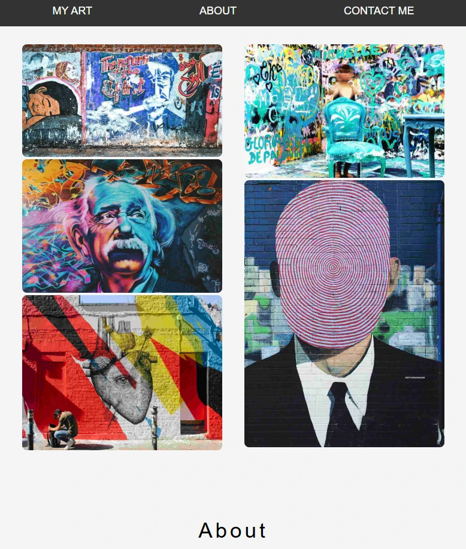
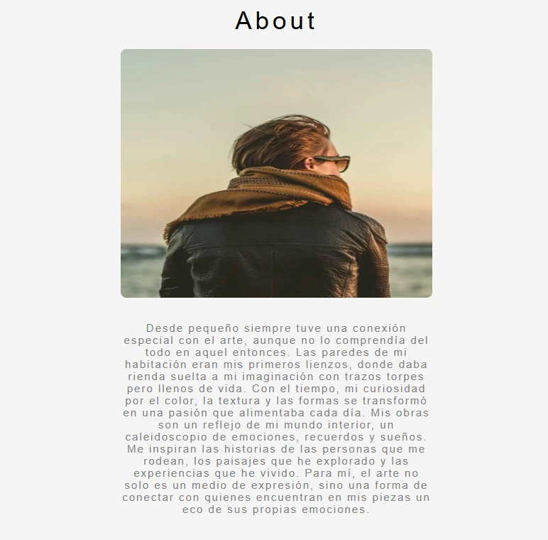
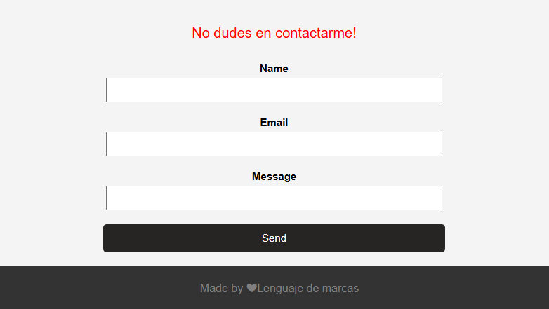

LM 1DAW · Tarea
RA2-FINAL CSS (50%)
Instrucciones
Galería, presentación y contacto
Reproduce la página de las capturas con HTML y CSS, utilizando las imágenes de los materiales.
Estructura de la página
- Menú con los enlaces MY ART, ABOUT y CONTACT ME.
- Galería de imágenes.
- Sección About, con imagen y texto de presentación.
- Formulario de contacto con nombre, correo electrónico, mensaje y botón de envío.
- Pie de página.
Requisitos de CSS
- Utiliza Flexbox para el menú, las imágenes, la sección About y el formulario.
- Redondea las esquinas de las imágenes.
- Al pasar el ratón por los enlaces del menú, cambia el color de su texto mediante
:hover. - Al pasar el ratón por el botón de envío del formulario, cambia su color de fondo.
Referencias



Entrega
Adjunta los archivos HTML y CSS, junto con las imágenes y los demás recursos utilizados.